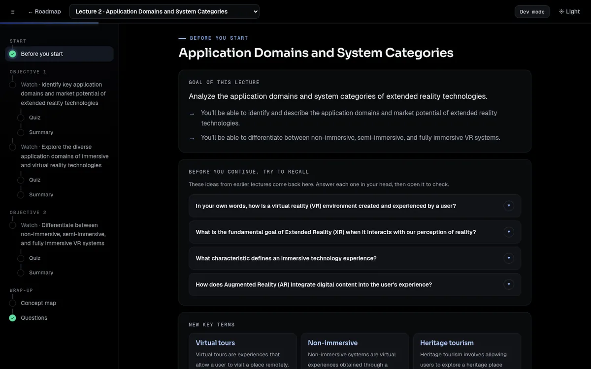
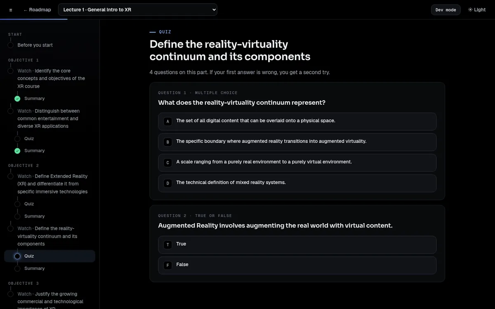
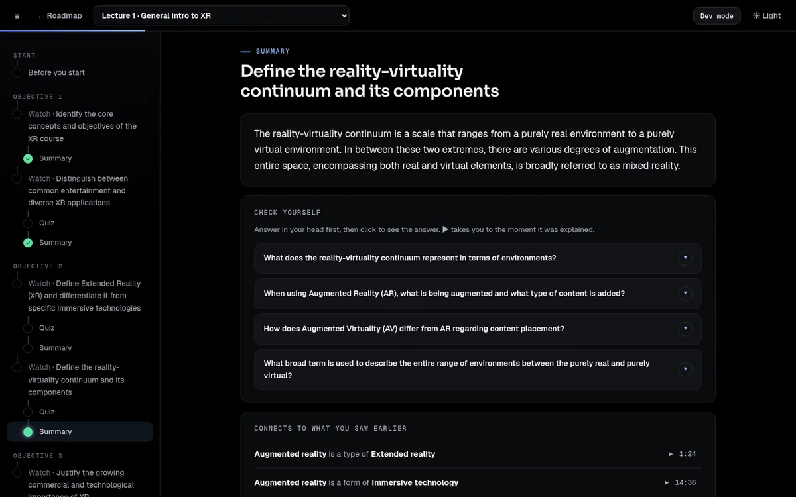
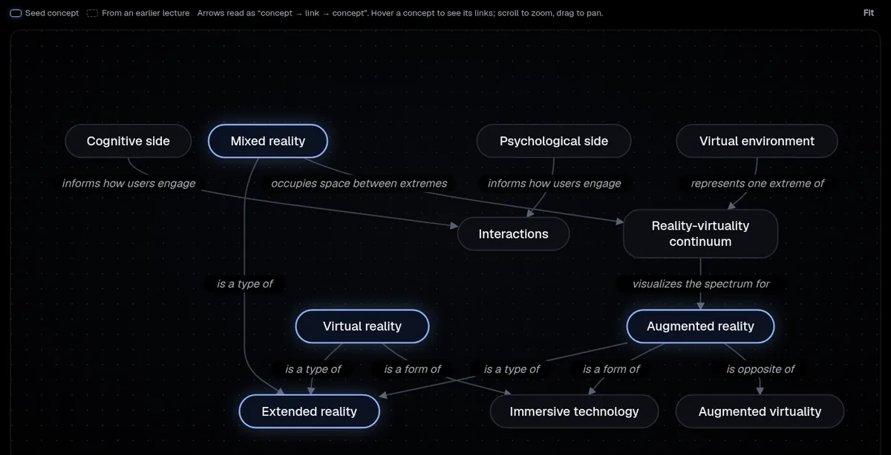
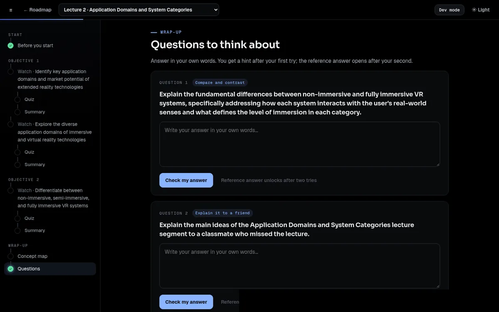

From lecture video to guided course
The LIR pipeline reads a course's subtitles and builds everything a learner needs around each lecture: what to recall first, short clips to watch, a quiz and a summary after each clip, a concept map and open questions at the end. It runs on one 12 GB GPU, and every item it writes points back to the sentence of the lecture it came from.
Every number and example on this page comes from Foundation for Virtual and Augmented Reality Systems (NPTEL), as built on 31 October 2026, except NPTEL vs MIT, which compares it with MIT 6.7960 Deep Learning.
Why it exists
Watching is not the same as learning
Open courses put thousands of hours of lectures online. Most learners watch them the way they watch anything else: start to finish, without stopping. It feels like understanding, but little of it stays.
Learning research says what helps. Bring back what you already know before something new. Take the material in short pieces. Pull ideas back out of memory instead of rereading them. Explain things in your own words and connect them. The ICAP framework orders it simply: passive watching teaches least, active work (answering, highlighting) more, and constructive work (explaining, mapping, applying) the most.
The catch is effort. Writing a recall question, a quiz and a recap for every few minutes of video, plus questions and a concept map per lecture, takes an instructional designer hours per lecture. Few courses get it.
The idea: generate that layer automatically from the transcript, check every item, and keep a record of why each one exists, so a course team can trust it or fix it.
One lecture, before and after
Lecture 1 of the VR course is a 33-minute video. The pipeline cuts it into seven parts at topic changes, groups them under three objectives, and turns each part into a short sequence of pages.
A guided path through any recorded course
Short clips instead of hour-long videos, questions that make you recall and explain, and a link back to the exact moment in the video whenever you need to see something again.
A complete first draft to review
Every quiz item, summary and question is already written, checked and tied to its source sentences. Dev mode in the viewer shows why each item exists and what the judge said about it.
One file format, any front end
The LIR describes a lecture as an ordered list of learning phases with recorded intent. The web viewer is one renderer; a VR classroom or an analytics tool can read the same files.
The learner's lecture
A lecture is a sequence of pages. The learner moves through them with Next; the contents list on the left shows where they are. Answers are never handed over before an attempt.
Know where you are going, and what you need
The lecture goal and its objectives come first, then a few ideas from earlier lectures that this one builds on. The learner answers each in their head and opens it to check; each answer links back to where it was taught. New key terms close the page.

One part of the lecture, nothing else
The player plays only this part's clip, with the viewer's own controls. They float over the video and fade away while it plays. Captions are off by default. With captions on, clicking a caption highlights that sentence; highlights come back in the summary and at the end of the lecture.
Pull it back out of memory
One to four questions on what the part taught: multiple choice, true or false, or yes or no. A wrong multiple-choice answer gets a second try before the explanation appears. Each question tests one key point of the part, and none asks what "the lecture said".

A recap you check yourself on
A short recap, then one question per key point. The learner answers in their head and clicks to see the answer, with a ▶ link to the moment it was explained. Below that: how this part connects to earlier concepts, and the learner's own highlights.

Connect the ideas
The learner starts from the lecture's key concepts, adds others, draws links and labels them. Checking the map scores it against the reference and unlocks the reference map, which draws itself in. Hovering a concept lights up its links and neighbours.

Explain it in your own words
Open questions: explain why, compare, apply to a new case, fill in steps, troubleshoot. The answer is scored against key points, not one model answer. The first try gets a level and a hint; the second shows which key points are covered. The reference answer opens after two tries.

The viewer is true black by default, with a light mode in the top bar. It shows learners only learning material; build details appear only in dev mode.
Each page serves a named principle
Every page and every item in the LIR records the principle it serves, its ICAP mode, its Bloom level and the rule that chose it. That record is what dev mode shows.
| Page | What the learner does | Principle | ICAP |
|---|---|---|---|
| Before you start | Reads the goal; recalls earlier ideas | Advance organizer, prior-knowledge activation, retrieval practice | active |
| Watch | Watches one part; highlights captions | Segmenting | passive → active |
| Quiz | Answers 1–4 questions, second try on a miss | Retrieval practice | active |
| Summary | Answers in their head, then reveals | Summarizing, retrieval practice | active |
| Concept map | Builds and labels a map | Concept mapping | constructive |
| Questions | Writes explanations, revises after hints | Self-explanation, elaboration, transfer, generative learning | constructive |
How it is built
Compile once, render anywhere
The pipeline works like a compiler. Its source is a course's subtitle files; its output is the Lecture Intermediate Representation (LIR): one JSON file per lecture and one for the course. Nothing at viewing time calls a language model. The viewer only reads the files, plus a small sentence-embedding model on the CPU to score open answers.
A lecture's LIR is an ordered list of phases: a primer, then for each part a segment phase (the clip) and an active phase (quiz and summary), then a constructive phase (concept map and questions). A renderer walks the list and draws each phase by its type.
Each call does one job on a short input, usually one part of a lecture, and its answer must fit a JSON schema. A 4B model does well at narrow jobs.
The model writes text. Code merges, counts, assigns timestamps, picks activity types by rule and shuffles where the right answer goes. The model never writes a time or an ID.
Every key point, term, question and link carries the sentence IDs it came from, so it can be checked, and the viewer can jump to it.
Every item says which principle it serves and which rule chose it, so a reviewer can see why it is there.
Each stage runs over every lecture as one batch before the next starts. Nothing decides its own next step, so a run is predictable and cacheable.
Lecture k only knows lectures 1 to k. Code checks that no item mentions a concept from a later lecture.
Seven stages, three workers
The generator (Gemma 4 E4B, 8-bit, on llama.cpp) writes. The
judge (gpt-6-luna on the OpenAI API) checks. The
embedder (a sentence-embedding model on the CPU) matches concepts and scores
answers. Code does everything else. Bars show each stage's time on the full VR course.
Transcripts
Segment
Annotate
Goal hierarchy
Course knowledge
Generate
Judge and repair
Assemble
Each stage sends all its calls for all lectures at once. The local server decodes up to 32 of them together in one shared KV cache (f16, not quantized). Every answer is cached by a hash of its prompt and model, so a rerun only recomputes what changed: a prompt edit in stage 5 reruns stage 5 and the judging of its items, nothing else.
0 · Transcripts
Each subtitle cue is cleaned and merged into sentences: a cue that ends mid-sentence joins the next. Every sentence gets an ID and keeps its times, and everything later cites these IDs. Lectures without a subtitle file use the official transcript, aligned word by word to YouTube's automatic captions for timing. The VR course has 12,028 sentences.
1 · Segment
One call per lecture, using the best prompt from the segmentation study (WindowDiff 0.09 against a human annotator, against 0.28 for TextTiling). The model returns the sentence numbers where a new topic starts; code sorts them, merges parts under 2 minutes into a neighbour, and flags parts over 12 minutes. The VR course has 388 parts, 4.7 minutes long on average; 16 are flagged as long.
2 · Annotate
Two narrow calls per part. The first writes the part's goal (verb first), its content type, and 2–5 key points, each tagged as being about the subject or about the course itself. The second picks the key terms a learner should know and defines each in plain, self-contained words. Code checks that cited sentences are inside the part, that each definition starts with its term, is not circular and is not a bare abbreviation.
- The reality-virtuality continuum is a scale ranging from a purely real environment to a purely virtual environment. [116–118]
- Augmented Reality (AR) involves augmenting the real world with digital or virtual content. [120, 122]
- Augmented Virtuality (AV) involves augmenting a virtual world with real-world content. [120, 121, 123]
- Mixed Reality (MR) is the broad term for the entire space between the purely real and purely virtual environments. [126, 130]
Key term · Augmented virtuality: Augmented virtuality is the opposite of augmented reality, where a virtual world is enhanced by incorporating real-world content.
3 · Goal hierarchy
A small call per lecture sees only the title and the parts' goals. It groups consecutive parts into 2–6 objectives, each phrased "You'll be able to …", and writes one lecture goal. Course goals are built bottom-up from the lecture goals; the VR course has 5.
4 · Course knowledge
This stage is what lets a lecture refer back to earlier ones. Terms from every lecture are merged into one concept registry: the same name or abbreviation means the same concept; otherwise embedding similarity decides (≥ 0.93 the same, 0.78–0.93 the model is asked yes or no, below that a new concept). One call per lecture then finds typed links between concepts: part of, example of, used in, leads to, contrasts with, prerequisite of, each with a short label and evidence sentences. Finally a snapshot of the registry is saved after every lecture; lecture k reads only its own snapshot.
How the course's knowledge grows
Concepts and links known after each lecture.
5 · Generate
Code decides what to make; the model writes the words. All calls for all lectures go out together.
Recall items (Before you start)
Code ranks earlier concepts by how this lecture builds on them: first those linked into its concepts as prerequisite of or used in, then any other link, then concepts it mentions again. It keeps up to four. The model writes a question about what each concept means, never what an abbreviation stands for, and a short answer.
Virtual reality creates a fully simulated environment where the user can interact with the digital world, making them feel as if they are in a completely artificial setting.
Quizzes
Only subject key points are quizzed; a part with none gets no quiz. The model decides how many questions the part deserves (1 to 4, never padded), which key point each tests and its type. Code rejects questions about the lecture rather than the subject ("according to the lecture …") and places the right answer at random.
Summaries
One call writes a 2–3 sentence recap and one check-yourself question per subject key point, with a short answer. Code attaches the jump link from the key point's sentences, and the links to earlier concepts from the graph.
It is a scale that places the purely real environment at one end and the purely virtual environment at the other.
Concept maps
Built by code only. The reference map is the lecture's concepts plus earlier concepts one link away, cut to a readable core: links that come from this lecture or touch a concept it introduces, at most 14 concepts, at most 4 of them from earlier lectures. VR reference maps have 9.1 concepts and 6 links on average.
Open questions
Code picks question types from a rule table, then one call per question writes the prompt, a reference answer and 3–5 key points with keywords for scoring.
| If the lecture has … | Question type | Principle |
|---|---|---|
| a derivation or procedure | Fill in the steps | worked-example completion |
| a contrasts-with link or a comparison part | Compare and contrast | elaboration |
| a mechanism explanation | Explain why | self-explanation |
| a worked example or application | Apply it to a new case | transfer |
| a procedure with a failure mode | Troubleshoot | elaboration, transfer |
| always (fallback) | Explain it to a friend | generative learning |
Key points a good answer covers
- ILD is the difference in sound magnitude. keywords: difference, sound, magnitude, heard, each
- Acoustic shadow causes magnitude difference. acoustic shadow, magnitude
- ITD is the difference in sound arrival time. difference, sound, arrival, time
- Distance between two ears causes time difference. distance, ears, difference, arrival, time
6 · Judge and repair
See How items are checked. This stage also calibrates the answer scorer: the generator writes a good, a partial and a wrong answer to a sample of questions, and code searches the two scoring settings so good answers score high and wrong ones low. For the VR course: m = 2 keywords, τ = 0.70, 64% agreement on 39 answers (mean score: good 0.84, partial 0.48, wrong 0.31).
7 · Assemble
No model calls. Code writes the files, validates them against the Pydantic schema in lir_schema.py,
checks that nothing refers to a later lecture and that recall only points backwards, and stores one embedding per
open-question key point and per concept.
Three layers
Constrained output
Every answer must match its JSON schema while it is generated, so counts, types and lengths always hold.
Rules after each call
Cited sentences inside the part, verb-first goals, distinct options, no circular definitions, no questions about the lecture. A failure goes back with the error, up to 2 retries.
A stronger model reads everything
Is it true to the transcript, answerable from the part, worth learning? Rejected items are rewritten with the judge's reason and judged again; what still fails is dropped.
The judge asks each item's own questions. For a key term: is it worth learning (a concept the lecture teaches, not a passing mention or a bare abbreviation), is the definition faithful, and is it useful to a learner? For a quiz item: is it worth asking, answerable from the part alone, and is the marked answer right and the only right one? Links, recall items, summaries and open questions get their own checks. A link the judge finds backwards is flipped by code.
What the judge decided
Share of each kind of item; hover a bar for the counts.
Table view
| Item | Judged | Passed first | Rewritten | Replaced | Dropped |
|---|
Key terms and links are dropped most, by design: the judge removes terms that are only named, never taught, and links the transcript does not support. A concept whose every definition was rejected leaves the registry with its links, which is why the course ends with 883 concepts. Some real decisions:
Layer 2: code checks by stage
Items that passed on the first try, after a retry with the error, or not at all (then dropped or flagged).
Questions per quiz
The model chose how many; 5 parts about the course itself got none.
Quiz question types
Of 1,272 questions.
Open-question types
"Explain it to a friend" is the fallback when no rule fits.
Link types
Between the course's concepts.
What the parts are
Content type of each of the 388 parts, as tagged in stage 2.
Known gaps. The fallback question type is still common (110 of 236), some
open-question key points read as keyword lists, only 6 quiz items review earlier lectures, and 6 lectures after the
first have no recall items. These are tracked in tasks.md.
NPTEL and MIT, side by side
The same pipeline, prompts, models and settings were run on a second course with a very different teaching style: MIT 6.7960 Deep Learning. It has the same amount of video as the VR course but in a third as many lectures, and the lecturer speaks about 45% faster. Most numbers below are per hour of video, so the two courses can be compared directly.
Foundation for Virtual and Augmented Reality Systems
- Lectures
- 63
- Video
- 31.0 h
- Per lecture
- 29.5 min
- Speech
- 111 words/min
6.7960 Deep Learning
- Lectures
- 23
- Video
- 29.0 h
- Per lecture
- 75.6 min
- Speech
- 161 words/min
The MIT dataset has no lecture 22, and its PyTorch tutorial is not built because the pipeline only reads lectures. Both courses were built on 31 October 2026.
Per hour of video
Each row has its own scale. Hover a bar for the totals.
Three things stay the same across the two courses. Both are cut into about 13 parts per hour of 4.6–4.7 minutes each. Both have about 28 new concepts per hour. Both get a full quiz after almost every part. These depend on the content, so the faster MIT speech does not change them. Four things fall by half or more for MIT: links between concepts, key terms on the first page, open questions and recall items. Each of these has a limit per lecture, and an MIT lecture is 2.6 times longer. Per lecture the two courses are close (8.3 links vs 6.6, 8.0 key terms vs 7.4, 3.7 open questions each), so a long lecture gets the same number of wrap-up activities as a short one.
What the parts are
Share of each content type, as tagged in stage 2 (388 NPTEL parts, 378 MIT parts).
The MIT lectures are mostly explanation (67% of parts, against 48%), with more discussion and motivation. NPTEL has more definitions and recaps, because each lecture opens by recalling the last one. The MIT lecturer seldom does that, so only 2 MIT parts are recaps.
Checks passed first time
Layer 2: code checks on every model answer. Layer 3: the judge, on every item.
Dropped by the judge
Share of each kind of item that was removed.
Quality is steady across the two courses. The code checks pass 85% of answers on the first try in both courses, and the judge passes 73–74% of items on the first read. The MIT lectures are denser and more mathematical, yet the drop rates are the same or a little lower. The judge removes about a fifth of key terms and a third of links and recall items in both courses.
Build time by stage
Minutes on one RTX 5070. Both rows share one scale.
The total cost is almost the same: 7.2 vs 7.4 minutes of build time and 2.4 vs 2.6 cents of judge cost per hour of video. Long lectures move time between stages. Segmenting takes longer, because each call reads a longer transcript. Course knowledge takes less time, because it runs once per lecture and there are fewer lectures.
All numbers
| Measure | NPTEL VR | MIT DL |
|---|
Takeaway. The pipeline holds up on a second course without changes to the prompts. Quality, part length and cost per hour all stay in line. The one difference that comes from the design is that wrap-up activities and key terms are limited per lecture, so learners get fewer of them per hour on long lectures. Scaling these limits with lecture length is a possible change. It is left for the content review.
Using it
cd lir-construction
python3 generate_lir.py --lecture ../dataset/virtual_and_augmented_reality # whole course
python3 generate_lir.py --lecture ../dataset/virtual_and_augmented_reality --only 1-3 # some lectures
python3 generate_lir.py --lecture ... --lir-only # skip the video downloads
python3 generate_lir.py --lecture ... --videos-only # only the videos
python3 serve.py # viewer at http://localhost:8000The script switches to the project's virtual environment by itself, and starts and stops the model server in the
llm-engine toolbox. The terminal shows progress per stage, tokens per second, API spending and video downloads.
| Option | What it does |
|---|---|
--only 1-3, --only 1,4,7 | Lectures to process (default: all) |
--config FILE | Model choices and API budget (default lir_config.toml) |
--lir-only / --videos-only | Build only the LIR, or only download the videos |
--no-judge | Skip layer 3 |
--fresh | Ignore cached answers |
--keep-server | Leave the local model running for the next run |
| Folder | Contents |
|---|---|
lir/<course>/ | The LIR: course.json, L01.json … |
media/<course>/ | Videos, Lxx.mp4 (720p) |
output/<course>/ | timing_report.md, timing.json, cache/ (every model answer), stages/, state/state_Lxx.json |
api_spend.json | Every API call's cost, per run and stage |
Which model plays which role is set in lir_config.toml. A Hugging Face GGUF reference
(org/repo:file.gguf) runs locally on llama.cpp; a plain OpenAI model name runs on the API with the key
from .env. Cached answers are kept per model, so switching a model recomputes only what that model produces.
| Field | What it does |
|---|---|
[generator] model | Stages 1–5, calibration answers and repairs. Now: Gemma 4 E4B, 8-bit GGUF. |
slots | Local: parallel requests (throughput peaks at 32 on the RTX 5070). API: concurrent requests. |
kv_tokens | Local: the KV-cache pool shared by all slots (f16). The client keeps tokens in flight under 85% of it. |
think_budget | Local: the most thinking tokens one call may use. |
reasoning_effort | API: low, medium or high. |
[judge] model | Layer 3. Now: gpt-6-luna. A local judge must be larger than the generator (Gemma 4 12B fits with 8 slots and a 32k pool). |
[judge_fallback] model | Optional, local only. When the API budget runs out mid-run, the judge calls that were not sent go to this model instead, and the rest of the run uses it too. Items it judged are counted in each lecture's quality. Now: Gemma 4 12B. Neither course needed it. |
[api] budget_usd | Total API budget across all runs (now $2.28; $2.08 used by both courses). Each call is priced at its worst case before it is sent; a call that could cross the budget is not sent. |
[api.prices."model"] | US$ per million input, cached-input and output tokens. Required for every API model. |
[videos] height | Download resolution (default 720). |
# judge locally instead (no API spending; slower, the models take turns on the GPU)
[judge]
model = "unsloth/gemma-4-12B-it-qat-GGUF:gemma-4-12B-it-qat-UD-Q4_K_XL.gguf"
slots = 8
kv_tokens = 32768Why llama.cpp and not vLLM: Gemma's E4B carries 3.5 B parameters of embedding tables that vLLM keeps in bf16, about 7 GB, so the model alone needs about 11 GB of the 12 GB card. The 8-bit GGUF fits with room for the cache.
python3 serve.py serves the viewer at http://localhost:8000, scores open answers and
concept maps on the CPU, and serves only viewer/, lir/, media/ and
docs/. Progress, highlights and answers stay in the learner's browser.
| Address | Opens |
|---|---|
/#/ | Course home: goals and the path through the lectures, as a list or a compact grid (the default for courses over 30 lectures; course-goal chips pick out the lectures that serve each goal) |
/#/L03/p/4 | Lecture 3, page 4 |
/#/map | Course map: every lecture's reference concept map joined into one, grouped by course goal; click to zoom in (shown after the last lecture) |
/#/L03/p/4/t/123.4 | … and seek the clip to 123.4 s |
/?dev=1 | Dev mode: answers, each item's intent and source sentences, origin record and judge verdict |
/?theme=light | Light mode (the top bar toggles it too) |
Scoring open answers
A key point counts as covered if the answer contains at least m of its keywords (stemmed, with synonyms), or if a sentence of the answer has cosine similarity ≥ τ with it. The share covered gives the level: Excellent ≥ 0.75, Good ≥ 0.5, Acceptable ≥ 0.25, otherwise Try again.
Scoring concept maps
Each learner concept is matched to the registry by name or alias, then by embedding similarity. The score is the share of reference links, among the learner's matched concepts, that the learner found. Links not in the reference are marked, not penalised. In the editor, links curve and carry arrows, concepts snap to the grid, and Tidy up lays the learner's map out with the same layout engine as the reference map.
Reference
Sentences. Σ = (σ0, …, σN−1), σi = (i, tstarti, tendi, texti), tstart non-decreasing.
Segmentation. A partition of Σ into contiguous parts sj = [aj, bj], with dur(sj) ≥ 120 s (merged by code) and ≤ 720 s or flagged.
Annotation. α(s) = (goal, content type, key points Ks, key terms Ts, used concepts Us); 2 ≤ |Ks| ≤ 5; each key point k has sources Ik ⊆ s and about(k) ∈ {subject, course}.
Phases. Φ = (primer, seg(s1), act(s1), …, seg(sM), act(sM), constructive). Every phase and item x carries an intent ι(x) = (principles, ICAP mode, Bloom level, rule, rationale, sources).
Course graph. G = (V, E, λ). Concepts v carry a name, aliases, a definition, an introduction point and mentions. Edges e = (u, r, w), r ∈ {prerequisite_of, part_of, example_of, contrasts_with, leads_to, used_in}, each with a label λ(e) and evidence sentences.
Snapshots. Gk = (Vk, Ek): concepts introduced and links evidenced in lectures ≤ k. Gk−1 ⊆ Gk. Lecture k is generated from (α(lecture k), Gk); its primer from Gk−1.
Salience. salk(v) = [ln(1 + parts mentioning v) + 𝟙[v defined] + ½ ln(1 + degk(v))] / max. It ranks key terms, summary concepts and map seeds.
Map reference. The subgraph of Gk on the lecture's concepts and their earlier neighbours, keeping links from lecture k or touching its new concepts, cut to the 14 best-connected concepts (≤ 4 earlier).
Answer score. covered(k) ⇔ |keywords(k) ∩ answer| ≥ m ∨ maxsentence cos(emb(sentence), emb(k)) ≥ τ; score = covered / |K|.
Defined in lir_schema.py (Pydantic); every file is validated against it.
course.json
lecture_ids, course_goals[] goals with the lectures they span
concepts[] id, name, aliases, definition, introduced, mentions, salience
edges[] src, rel, dst, label, evidence {lecture_id, sentence_ids}
L01.json
sentences[] id, start, end, text
roadmap lecture_goal, objectives[] {text, segment_ids}
segments[] subgoal, content_type, key_points[], key_terms[], concept_ids
phases[] walked in order by a renderer
primer lecture_goal, objectives, key_terms[], recall[] {question, recap, jump_to}
segment start, end, sentence_range, highlighting
active quiz {items[]: stem, options, correct_index, explanations}, summary {recap, review[], earlier_links[]}
constructive concept_map {seeds, reference_nodes, reference_edges}, open_questions[] {prompt, reference_answer, key_points[]}
scoring m, τ, tiers, calibration
quality judge model, checks, resolved_by_code[]
origin[] per item: model, prompt id and version, input hash, checks, retries, tokens, timeEvery prompt lives in pipeline/prompts.py with an ID and a version, and both are recorded in each item's origin.
| ID | Version | Stage | Writes |
|---|---|---|---|
segment.standalone | 3 | 1 | Where topics change |
annotate.subgoal_points | 2 | 2 | Part goal, content type, key points (subject or course) |
annotate.terms | 3 | 2 | Key terms and plain definitions |
goals.hierarchy, goals.course | 1 | 3 | Objectives, lecture goal, course goals |
state.same_concept | 1 | 4 | Yes or no: are two terms one concept |
state.edges | 3 | 4 | Typed links with labels and evidence |
primer.recall | 2 | 5 | Recall questions and answers |
active.quiz | 3 | 5 | 1–4 quiz items, their key points and types |
active.summary | 2 | 5 | Recap and review questions |
constructive.open_question | 3 | 5 | Open question, reference answer, key points |
judge.segment, judge.lecture | 2 | 6 | Verdicts with reasons |
| File | What it does |
|---|---|
generate_lir.py | The one command: videos, stages 0–7, report |
pipeline/transcript.py | Course discovery; subtitles → sentences |
pipeline/media.py | Video downloads, caption alignment |
pipeline/llm.py | Model servers, batching client, cache, token budget, API ledger |
pipeline/prompts.py | Every prompt, with ID and version |
pipeline/validate.py | Layer-2 checks |
pipeline/s1_segment.py … s7_assemble.py | The stages |
pipeline/s6_judge.py | Layer-3 judge, repairs, resolution by code |
pipeline/calibrate.py | m and τ calibration |
pipeline/report.py, pipeline/ui.py | Timing and quality report; terminal progress |
lir_schema.py | The LIR schema |
serve.py, scorer.py, viewer/ | The viewer and runtime scoring |
docs/pipeline.html | This page (written by hand; images in docs/img/) |